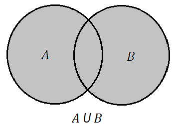
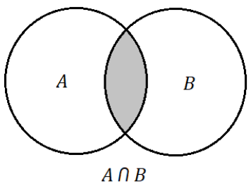

Chamamos de conjunto toda e qualquer coleção de elementos. Estes elementos podem ser números, objetos, figuras, pessoas, animais e tudo o que podemos ordenar, catalogar ou reunir em grupos de seus elementos. Por exemplo: Se quisermos construir o conjunto de crianças de uma escola que possuam exatos 10 anos de idade, podemos dizer que o conjunto é composto pelos alunos Pedrinho, Joãozinho, Mariazinha, ..., e todos os alunos que tenham 10 anos de idade na escola. Matematicamente, quase sempre os conjuntos serão compostos por números e que dependam de algumas condições. Por exemplo: O conjunto dos números Reais, o conjunto dos números Inteiros, o conjunto dos números maiores do que 2 e menores do que 7, e muito mais.
A relação básica entre um conjunto e o elemento que o compõe é chamada de relação de pertinência, ou seja, definimos um conjunto quando existe uma regra que permite decidir se um elemento pertence ou não a ele. Se um elemento x pertence a um conjunto (ou coleção) A, dizemos que x pertence a A. Formalmente escrevemos:
x ∈ A
E quando x não é um elemento deste conjunto, dizemos que x não pertence a A:
x ∉ A
A maioria dos conjuntos em matemática não possuem uma definição para todos os seus elementos, logo a forma mais fácil de definir um conjunto é utilizando uma propriedade comum para todos os seus elementos, ou seja, uma lei que consiga ser associada a todos os elementos que o compõe. Vejamos abaixo alguns conjuntos numéricos usuais:
Exemplo 1: Vamos definir um conjunto A que seja construído a partir dos números Naturais e que qualquer elemento de A seja maior ou igual a 5 e menor ou igual a 10. Então o conjunto será:
A={5,6,7,8,9,10}
Como sabemos que qualquer elemento x que pertence a A é um número Natural neste exemplo, podemos representar o conjunto da seguinte maneira:
A={x∈ℕ:5≤x≤10}
Lê-se: O conjunto A é igual a x (elemento qualquer de A) que pertence aos naturais, tal que 5 é menor ou igual a x e x é menor ou igual a 10 (ou x está entre 5 e 10).
Existem alguns conjuntos que são representados por uma propriedade onde não é possível gerar elementos. Vejamos um caso:
A={x∈ℕ:1<x<2}
Note que qualquer elemento de A pertence ao conjunto dos naturais, porém é um absurdo dizer que nos naturais existem números entre 1 e 2, ou seja, em ℕ não existe o número 1,5, por exemplo. Então, neste caso, dizemos que o conjunto A é vazio. E será representado por:
A=∅
Atenção! O conceito de conjunto vazio remete a não existência de elementos, e não que o seu elemento é zero.
Note que no exemplo 1, os elementos do conjunto A estão contidos nos números Naturais, dizemos então que o conjunto A é um Subconjunto dos números Naturais, ou seja, o conjunto A está contido no conjunto ℕ. Escrevemos então:
A ⊂ ℕ
Exemplo 2: Basicamente, um subconjunto é um conjunto que possui elementos de outro. Como no exemplo da introdução, tomando o conjunto de crianças de 10 anos de idade em uma escola (chamaremos de A), e selecionando apenas os meninos (chamaremos de B), podemos dizer que o conjunto de meninos com 10 anos de idade é um subconjunto do conjunto das crianças. De uma maneira geral, dados dois conjuntos A e B, dizemos A é subconjunto de B quando todo elemento de A é também elemento de B. Sendo assim:
A ⊂ B
Exemplo 3: Os conjuntos numéricos ℕ, ℤ e ℚ cumprem uma relação de inclusão, onde:
ℕ ⊂ ℤ ⊂ ℚ
Propriedades da inclusão:
União de conjuntos: A união (ou reunião) de conjuntos é a junção dos elementos de um conjunto A mais ou elementos de um conjunto B. Podemos afirmar então que se um elemento x pertencer a união de A com B, então x pertence a A ou pertence a B. Formalmente definimos:
A ∪ B={x:x ∈ A ou x ∈ B}
Veja abaixo uma representação no chamado diagrama de Venn. A região cinza simboliza a união dos seus respectivos elementos.
Interseção de conjuntos: A interseção de conjuntos é formada pelos elementos que são comuns entre A e B. Então:
A ∩ B={x:x ∈ A e x ∈ B}
